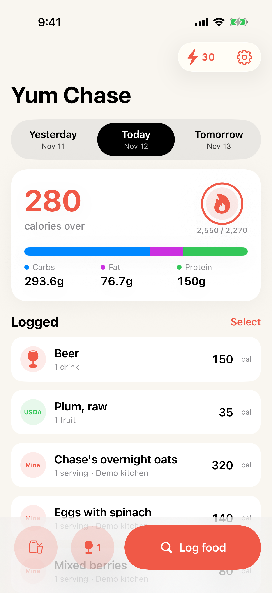
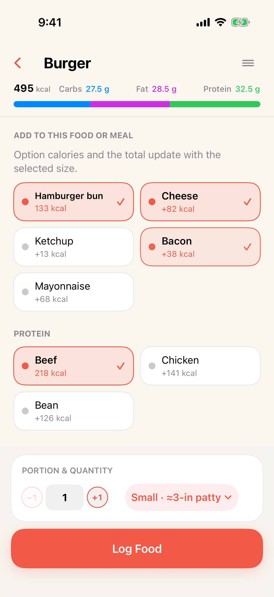
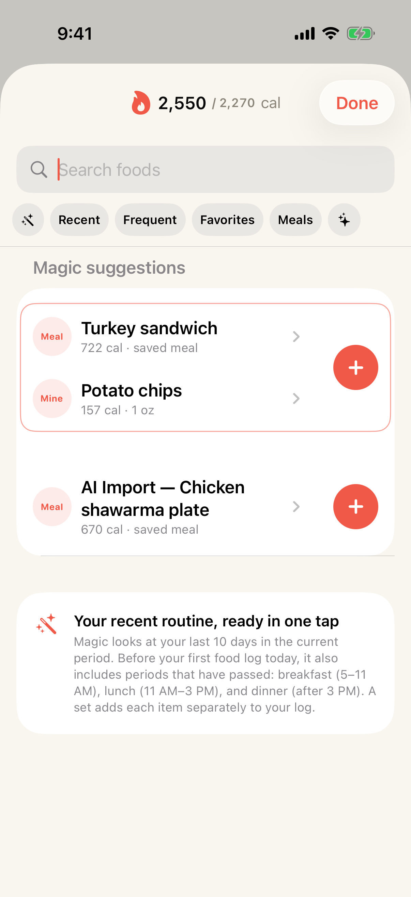
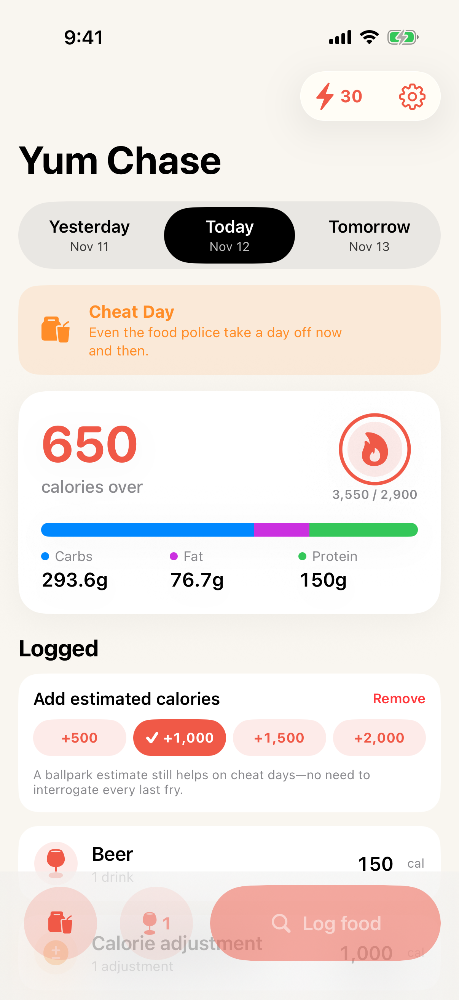
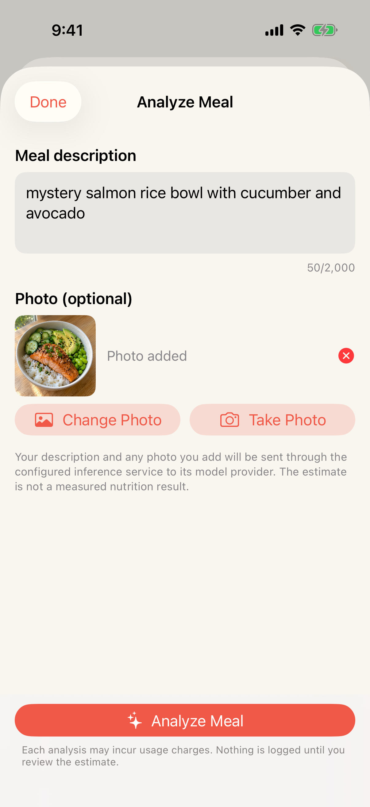
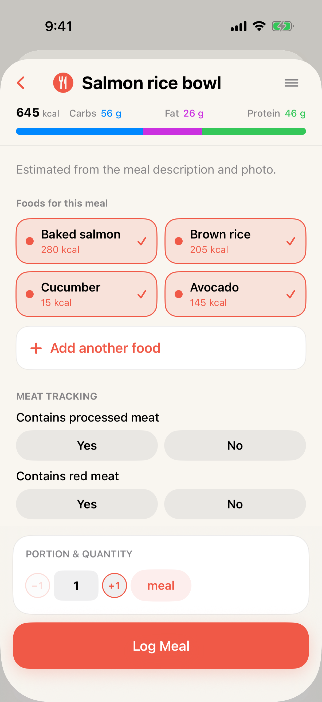

A smarter food log
Log food in fewer taps.
Smart defaults keep your regular foods and common options close at hand, so logging takes a moment and you can get back to your day.
- Fewer taps by design
- Your log stays local
- Common options built in

01 / Your food log, without the wait
Open the app. Log your food.
Keep moving.
Some food apps put server-loaded feeds between you and your food log. Yum Chase keeps the focus on logging: network requests never block in-app actions, so your diary responds instantly and your entries stay on your device.
02 / Make the burger make sense
Keep the food.
Choose the options.
Start with your familiar Burger, then choose whether it had cheese, bacon, or a bun and set the portion. You don’t have to hunt for a separate catalog item for every variation.

03 / Magic Mode
Your regular foods,
at the right time.
Magic Mode learns the foods and meals you repeat, then brings familiar choices forward for breakfast, lunch, or dinner. Add a whole routine in one tap, or open an item to fine-tune it.
Suggestions use your recent logging pattern on your device.

04 / Track real life
Falling off the wagon shouldn’t derail your logging.
If you’re skipping the item-by-item details for a day, add a rough calorie estimate and keep your diary moving. You can stay honest about where you landed without turning a cheat day into a meal-by-meal audit.
Alcohol, red meat, and processed meat also have first-class concepts in the log.

05 / For what’s missing
Describe the meal.
Review the estimate.
When a food isn’t in the catalog, describe what you ate and add a photo. AI drafts a meal, ingredients, and nutrition estimate for you to review before anything goes into your diary.
Meal description and selected photo are sent to the configured inference service only when you choose Analyze. Read the privacy details.


Yum Chase